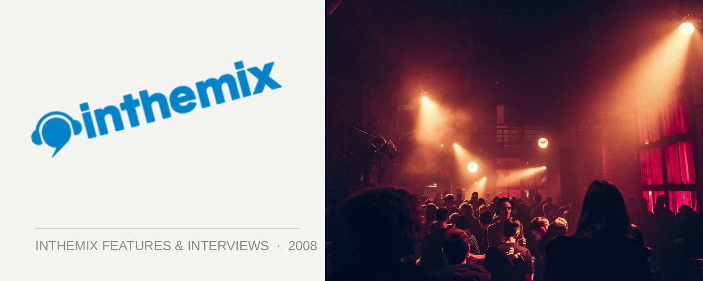

Kink 5th Birthday: Doing things their way
Cast your mind back. Way, way back… Can you remember what you did on your 5th birthday? Chances are it didn’t involve a chic Oxford Street music venue, one of Sydney’s hottest crowds and one of Spain’s most formidable techno outfits; Pig & Dan.
After an eternity at the Arthouse, late last year the Kink crew said goodbye to their home and headed out into the wilderness to launch their own club. They hit a snag when the council told them they could only have a 2am license, and ever since they’ve been fighting the good fight to get it extended.
A club that closes at 2am is about as effective as windscreen wipers on a submarine, so Scott Robertson and the Kink team knew it was imperative they delay the opening until they had all their ducks in a row. The ducks are finally lined up, and the club is set to open very soon (with a 6am closing time, nonetheless).
In the meantime, Kink will continue their run of special one off events at the Oxford Art Factory this month, celebrating their momentous 5th birthday with Pig & Dan of Sven Vath’s pioneering Cocoon label. One of Spain’s finest electronic music exports, they’re bonafide legends of Ibiza, and Scott can’t wait to have them play.
Hey Scott, happy birthday! Tell us a little bit about what Kink has been up to in the first stage of 2008?
Publicly we’ve been relatively low key. We kicked off the year with a record breaking crowd at Oxford Art Factory with Moguai in January. This was our first major event since we left the Arthouse in October and it was great to see that Kink had lost none of its pull and the kids were happy to follow us to Oxford Street. Given that behind the scenes we were working tirelessly on our own venue this was a very encouraging sign. Since then we have held a few one off parties, but without a doubt our main focus is on making sure that Nevermind (formerly Mylk) will live up to all the hype when we finally open later this year.
Kink is about to celebrate it’s 5th birthday; it’s a cliché to say that amount of time is an eternity in clubbing years, but it’s true. How do you feel to have reached this milestone, in spite of all the obstacles that you’ve faced?
I am extremely thankful to have reached the 5 year milestone, as anyone that works in the industry will tell you even the greatest club brands in the world have a 4 year shelf life unless they can reinvent themselves. I remember when it all started, after I lost all my money from my first Australian club venture Miss Moneypenny’s. To manage to get the first Kink over the line I had to live for 3 months without a fridge, furniture or even a bed. Luckily for me it couldn’t have been more successful, with 1,800 trying to cram themselves into the Arthouse hoping to catch DJ Falcon. Whilst 2 minute noodles are no longer the highlight of my week, I haven’t forgot that it’s hard work, belief in what you’re doing and determination that make things happen. I’m sure this will be reflected when I move into the next stage of my business life; owning my own club.
Coming up for the birthday you’ve got an extremely exclusive headliner; Pig & Dan. They’ve been in the game for ages and are particularly hot at the moment. What inspired them as a choice?
Ever since I saw Pig & Dan in Ibiza last season at Cocoon I have been desperate to get them over to Kink in Australia. They very much represent where my head is at musically at the moment, and since it’s the birthday I get to pick who I want to play the most, haha!
There was always a perception that Kink’s music policy was straightforward commercial house, but Pig & Dan are just another in along line of credible underground acts that you’ve hosted, along with DJ T, Deadmau5 and Danny Howells to name a few. Has it ever frustrated you that these perceptions exist?
I think with any success, especially on the scale that Kink enjoyed, there comes a backlash. In our case a lot of people who enjoy underground music perceived Kink to be a commercial club. They couldn’t believe that any club that was selling out with over 1,300 kids a week could possibly be pushing anything on an underground tip. For me this could be a little frustrating. If I wasn’t a club promoter I would be front and centre of the clubs. I am extremely passionate about the music and Kink’s music policy has grown and matured as my own tastes have matured. Obviously we couldn’t get away with booking big underground acts right from the start. To fill a club of that size week in and week out you need to build a solid reputation and then gradually push things in the direction you want. I think a lot of people overlook the fact that we have pushed some of the biggest underground artists through the club, and many hail it as their favorite gig to play in Australia. Oliver Huntemann played his first Sydney show for Kink in February 2006 and he enjoyed it so much he dropped in after Future Music Festival 2007 and played for free!
Your reign at the Arthouse was a long one, but in 2007 you faced a bit of competition in the clubbing scene which encouraged you to take a change in direction. Do you feel any regrets at all about how things wound up at the Arthouse?
Kink was undoubtedly the most successful club night in Sydney for a very long time. We ‘sold out’ every single week without fail for a little over 3 years, which for any club – no matter what city you are in – is a massive achievement. But like everything, times change. Two big club brands came to Sydney and took over venues which hadn’t been used to their [full] potential for some time, and they were essentially something brand new for the kids to check out. At the same time an opportunity to buy a club with my best friend and now business partner Steve Lowe (ex-Lady Lux) presented itself. Owning my own club has been a life long goal, so this seemed like the natural progression for me.
Let’s talk about what’s coming up for Kink. We know that last year you purchased the old Mylk venue on Oxford Street, and you’ve been refurbishing it. It was originally slated to open in January, so it seems like you’ve faced some delays. What’s been going on there?
The club has been delayed considerably since we first took on this project. We initially planned to be open by December or January, but we ran into unexpected problems with the council and it has been a long and arduous task to get the club across the line. They were insistent on giving us a 2am license, which would have left us dead in the water, but thankfully after a lot of hard work, sleepless night and considerable legal fees they have finally conceded and when we open we will have a full 6am license.
What will the club’s capacity be, and can you fill us in on all the details regarding layout, sound system, what sort of experience you’re trying to create?
The club is licensed for 380 and the layout is completely changed since its previous incarnations as Mylk, which in my opinion was a very badly designed club. The club will be split into two main sections. The dancefloor will be the main focus of the club and the other half is the lounge area. We are adding a cocktail bar and a vodka bar as well as the existing main bar, so we can cater to everyone’s tastes. Like myself, the Kink crowd has grown up over the last 5 years, and the new venue has something to offer everyone. The main room at the Arthouse was very much a place for dancing, and I am pleased that with the new venue we also have the lounge area which appeals to the slightly older crowd who love the music but might not necessarily want to be in the thick of it for 8 hours.
I’ve been very active in every aspect of the design of the club, right down to the most minor detail. I have been promoting clubs all over the world for the last 12 years and along the way I have picked up some ideas and stored them away until one day I could put them all together. I think it should be made clear that Nevermind is a proper club, and the music is very much the focus. As such I wanted mind blowing music on a mind blowing system, and sound systems don’t come much better than Funktion One. Luckily for us the guy who designed the legendary system for Cielo in New York is living in Byron Bay at the moment, and he will be designing our system. Funktion One want to make Nevermind their Australian showcase, so I think we are going to be in for something special.
Design wise, the deconstructed look of the venue also draws influences from New York and combines creative input from award winning designer Greg Natale, along with the work of one of Australia’s most exiting young artists, Adam Harriden. Everything from the toilets to the DJ box will be a major talking point, but I don’t want to give away too much just yet.
And what sort of music policy can we expect, will it be in line with what you were doing at the Arthouse or are you planning on freshening things up?
I’m not the biggest fan of using genres to describe music. As far as I am concerned music falls into two categories; music I like and music I don’t. I have reached a stage in my life where I have come to the realisation that I only want to push music that I personally enjoy and music I am passionate about. Financially this can be a risky way to run a club but Nevermind is the perfect size and there is an intensity and a desire to experiment that will allow us to go places that other clubs don’t facilitate. Where possible I would like to see techno being pushed a lot more in Sydney. Techno doesn’t have to always be dark as it used to be. In 2008 it is a little different, the music is slower, funkier and sexier. The parties are cosmopolitan and anyone who says girls don’t like it hasn’t been to Ibiza. I think Kink’s 5th birthday lineup is a good reflection of where Saturday’s at Nevermind are heading.
Do you feel like you’ve lost any of your audience because you haven’t had a weekly presence for so long?
The club scene is constantly changing and 6 months is an eternity in club land. I think it goes without saying that we will have lost some of our immediate widespread popularity by being out of the scene, but at the same time Kink has always had an extremely loyal following and most clubbers have great memories of Kink, so they are always up for the chance to enjoy it again. At the same time a whole new generation of clubbers have come through and they’ll get to experience Kink for the first time.
Kink’s 5th Birthday, featuring Pig & Dan of the Cocoon label, takes place at the Oxford Art Factory this Saturday April 26th. Check out ITM Whatson for more details, and be sure to keep your eyes glued to inthemix over the coming weeks as we bring you info on Nevermind’s long awaited launch as it comes to hand!